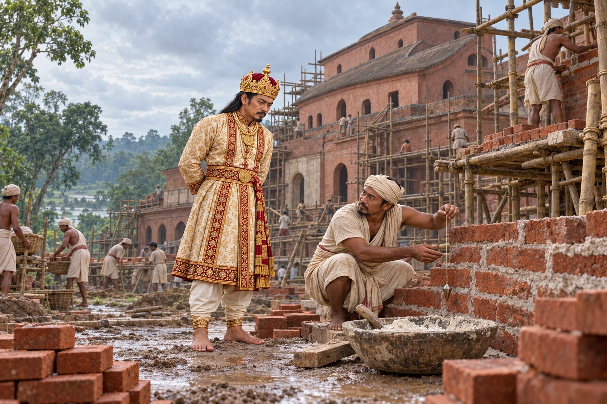

Rebuilding the Kareng Ghar at Garhgaon
1752 · The Tungkhungia kings

Rajeswar Singha replaces the wooden palace at Garhgaon with the brick and stone seven-storey Kareng Ghar that still stands.
The Kareng Ghar infobox gives 1758; the text and the Sivasagar district site give 1752. Shows a general 1750s worksite. Sources differ between 1752 and 1758; scaffolding, work methods and palace proportions are reconstructed.
Sources
People: Rajeswar Singha (Suremphaa)
Open this scene in the interactive archive · Follow this event on MAP